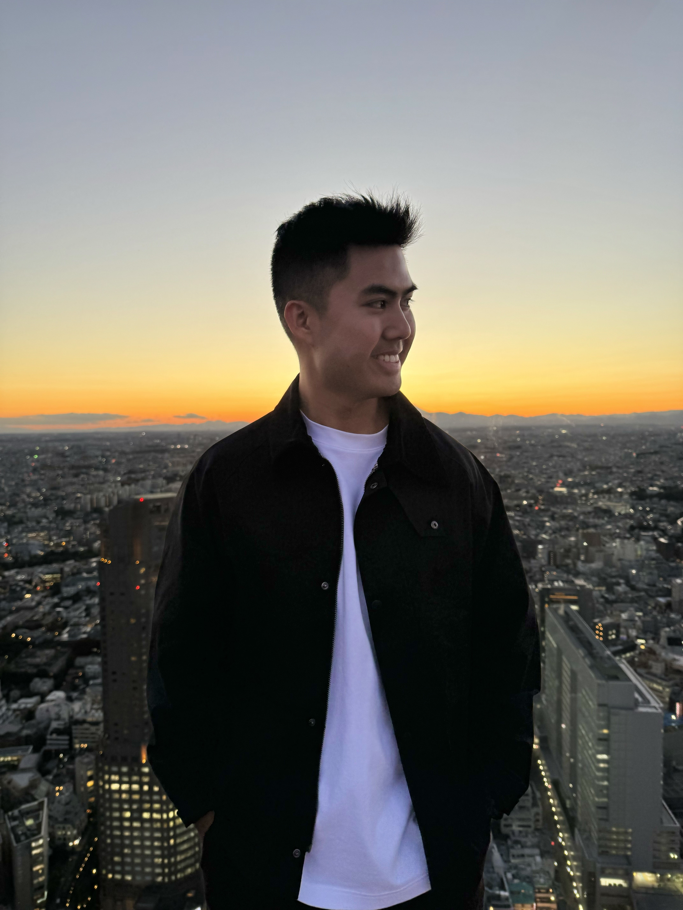

Hello, my name is
Benjamin Le
I currently work for the Department of Education as an Admin and Technical Support Assistant, following my recent completion of a Software Engineering degree at Curtin University. I am passionate about using technology to solve complex problems and possess the technical and analytical skills to create innovative solutions that drive business value.
Throughout my academic and professional career, I have demonstrated a commitment to excellence and a drive to succeed. I am constantly seeking out new challenges and opportunities to learn, grow and make a meaningful impact in the field of technology.